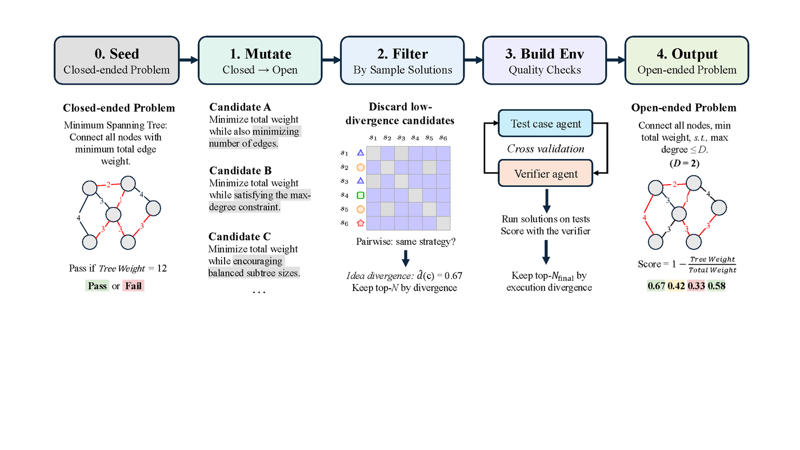
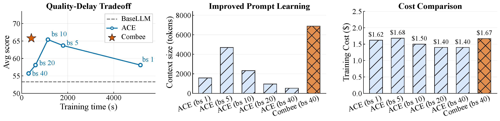
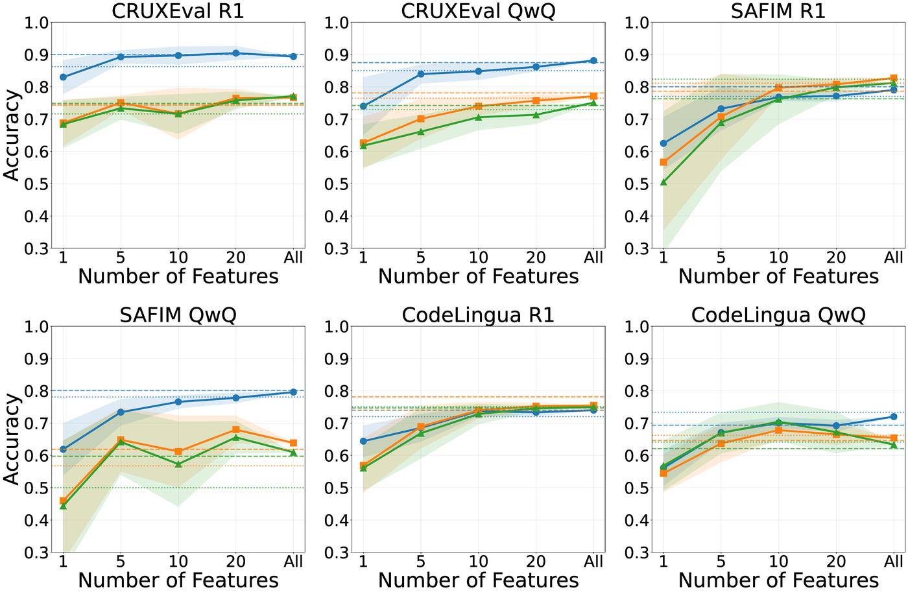
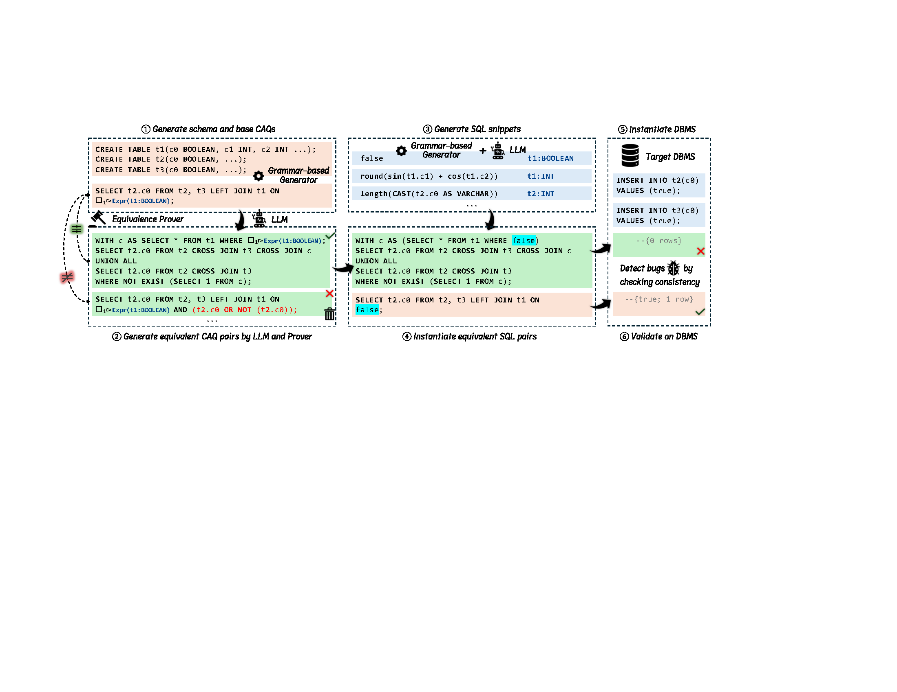
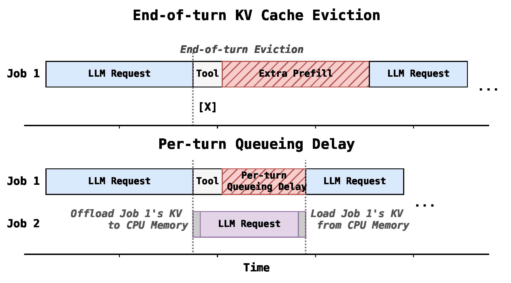
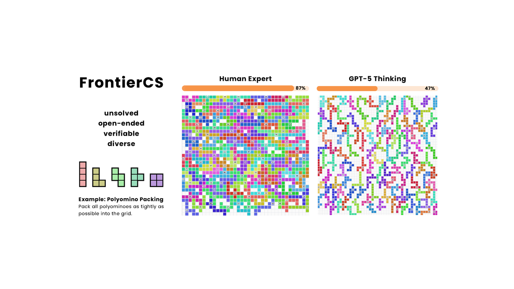

About
I am a Visiting Student Researcher at UC Berkeley, working in the Sky Computing Lab with Prof. Alvin Cheung. My research focuses on agents and ML×Systems — building infrastructure that makes intelligent agents fast, robust, and scalable.
I am an ICPC 48th World Finalist. My competitive programming background shapes how I approach algorithmic efficiency in systems research.
News
- May 2026 — FrontierSmith preprint released.
- Apr 2026 — Combee preprint released.
- Apr 2026 — Playing Psychic preprint released.
- Apr 2026 — Argus published at SIGMOD 2026.
- Apr 2026 — Continuum presented at ICLR 2026 Workshop (Lifelong Agents).
- Dec 2025 — FrontierCS accepted at ICML 2026.
Publications
* denotes equal contribution / co-first authorship.

FrontierSmith automatically evolves closed-ended competitive programming tasks into open-ended challenges where optimal solutions are unknown, providing rich training signal for LLM coders on hard real-world problems.

Combee introduces parallel scan and augmented shuffle mechanisms for prompt learning, achieving up to 17× speedup over prior methods while maintaining comparable accuracy across agent benchmarks including AppWorld and Terminal-Bench.

We show that the structure of a reasoning trace — not just its contents — is a strong predictor of correctness. Structured thought-trees enable a classifier to identify anomalous traces and improve performance through targeted retrying.

Argus leverages LLMs to automate test oracle discovery for DBMS testing. Using formal verification to curb hallucinations, Argus discovered 40 previously unknown bugs across five extensively-tested database systems, 26 of which have already been fixed.

Continuum introduces a KV-cache time-to-live (TTL) mechanism for multi-turn agentic workloads, selectively pinning KV cache during tool calls to eliminate recomputation overhead. Evaluated on SWE-Bench, BFCL, and OpenHands, it improves average job completion time by over 8×.

A benchmark of 156 open-ended computer science problems curated by CS PhDs and competitive programmers, targeting tasks where optimal solutions remain unknown but quality can be objectively measured via executable programs.